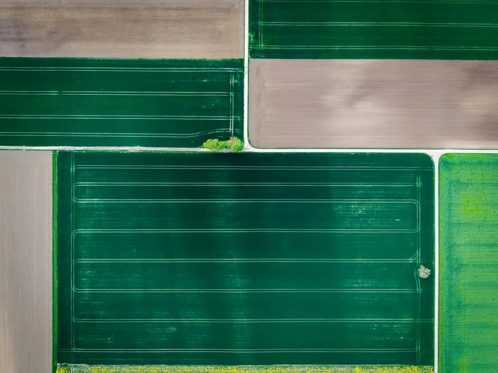

EMBRAPA ·
Bioinsumos e produtividade da soja no Paraná
A Embrapa relata acompanhamento de boas práticas de fixação biológica de nitrogênio em parceria com o IDR-Paraná. O resultado se refere às condições observadas no projeto.
Um resultado de pesquisa não garante o mesmo desempenho em qualquer propriedade.
Leia a notícia original